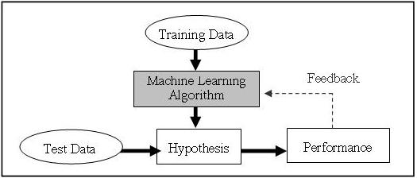

Introduction¶
Selon Wikipédia, “Le partitionnement en k-moyennes (ou k-means en anglais) est une méthode de partitionnement de données et un problème d’optimisation combinatoire”. Ceci étant dit, prenons le temps de présenter de manière plus général le contexte dans lequel cet algorithme est généralement utilisé : l’apprentissage automatique
Apprentissage Automatique (Machine learning)¶
L’apprentissage automatique, plus connu sous le nom de machine learning en Anglais, est un sous-domaine de l’intelligence artificielle qui vise à effectuer des actions pour lesquelles ils n’ont pas été explicitement programés. Concrétement, on distingue l’apprentissage supervisé de l’apprentissage non supervisé.
- Apprentissage supervisé (supervised learning) : Consiste à attribuer une étiquette (label) à des données.
- Apprentissage non supervisé (unsupervised learning) : Consiste à séparer un ensemble de données en plusieurs catégories
Apprentissage supervisé¶
C’est le cas par exemple des célébres de classification d’image du type reconnaissance de chiffres manuscrit (MNIST), d’images(ImageNet). C’est également le cas si l’on veut determiner le prix d’un appartement en fonction de ses caractéristiques, ou encore la gravité d’une tumeur.
Le principe de fonctionnement est simple : on utilise un grand ensemble de données déjà étiquetée (appelé ensemble d’entrainement) pour construire un modèle, qui nous servira ensuite a estimer l’étiquette d’une donnée non étiquetée. Un jeu de données étiquetées (appelé ensemble de test), non utilisées pour l’entrainement du réseau, nous sert à vérifier la validité du modèle :
Parmi les grands algorithmes d’apprentissage supervisé, on compte les réseaux de neurones.
Apprentissage non supervisé¶
L’exemple classique pour évoquer l’apprentissage non supervisé concerne la segmentation du marché d’une entreprise. Une entreprise possède un certains nombre de clients et aimerait les dissocier en plusieurs catégories, mais ne connait pas forcément le nombre, la taille ou le type de catégorie à l’avance. Il s’agit de trouver un ‘juste milieu’ entre prendre une catégorie par individu, et une pour tous.
Un autre exemple que nous proposons, est celui d’une compagnie des Telecom qui voudrait installer un réseau d’antennes en Bretagne. Ne disposant que d’un nombre limité d’antennes, la compagnie souhaite maximiser l’emplacement de celles-ci. Une solution pour elle est de faire appel à un algorithme d’apprentissage non supervisé pour séparer la population en différentes catégories, et ensuite disposer une antenne pour chaque catégorie. Il s’agit donc de détecter une structure cachée dans l’ensemble de données.
L’un des algorithmes les plus célèbres pour faire de l’apprentissage non supervisé est précisemment l’algorithme des k-moyennes, plus connus sous son nom anglais k-means.
En particulier, nous allons étudier dans ce projet le deuxième exemple proposé : utiliser k-means pour positionner des antennes téléphoniques en Bretagne.